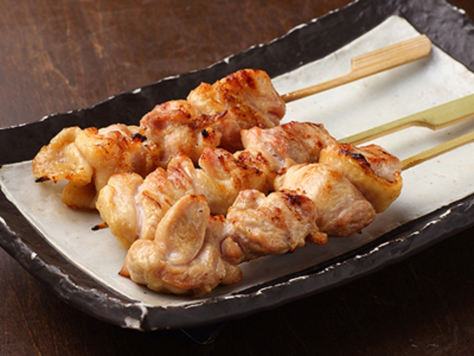

Delicious yakitori
While we in the UK might pick up a serving of chips or a hot dog during a sports match, the Japanese will pick up some yakitori. With a name literally meaning ‘barbecued chicken’, yakitori are small skewers of bite-size chicken pieces seasoned with salt or brushed with a sauce, or tare, of mirin rice wine, soy sauce, sake alcohol, and sugar. There are many different types of yakitori, but the most common varieties are momo (chicken thigh), negima (chicken and spring onion), and tsukune (chicken meatballs).